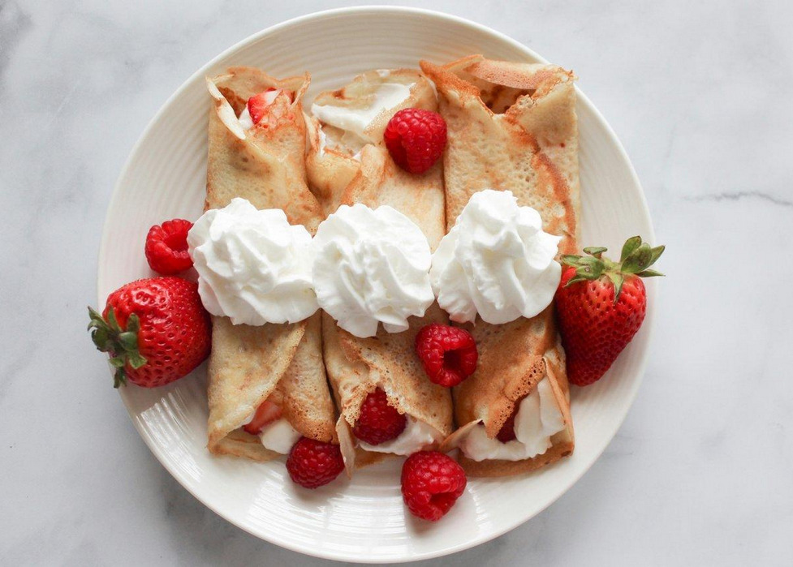
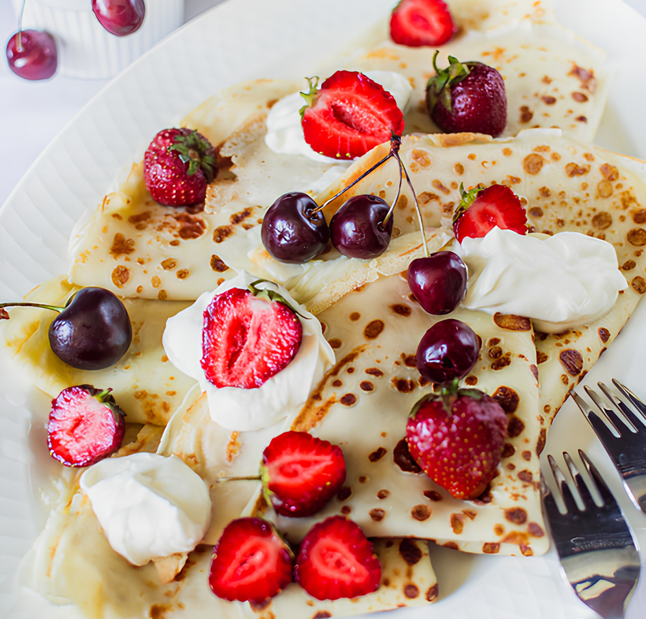
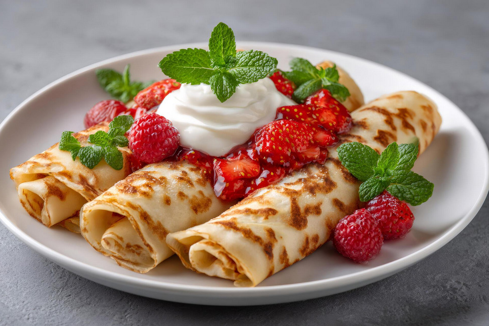

Блинчики со взбитыми сливками и ягодами
Нежные домашние блинчики со взбитыми сливками и свежими ягодами — отличный десерт для завтрака или чаепития.



Ингредиенты
- 250 мл молока
- 150 г пшеничной муки
- 2 яйца
- 1 ст. л. сахара
- 1 щепотка соли
- 2 ст. л. растительного масла
- 200 мл сливок жирностью 33–35%
- 2 ст. л. сахарной пудры
- 150–200 г свежих ягод (клубника, малина, черника или голубика)
- Сахарная пудра для украшения (по желанию)
Шаги приготовления
- В миске взбейте яйца с сахаром и солью. Добавьте молоко, затем постепенно всыпьте муку, тщательно перемешивая до однородности. Влейте растительное масло.
- Разогрейте сковороду и выпекайте тонкие блинчики с обеих сторон до золотистого цвета.
- Охлаждённые сливки взбейте миксером с сахарной пудрой до устойчивых пиков.
- Вымойте и обсушите ягоды. Крупные ягоды (например, клубнику) нарежьте небольшими кусочками.
- Выложите на каждый блин немного взбитых сливок и ягод, затем сверните блинчик трубочкой или конвертом.
- Перед подачей украсьте блинчики оставшимися ягодами, взбитыми сливками и при желании посыпьте сахарной пудрой.